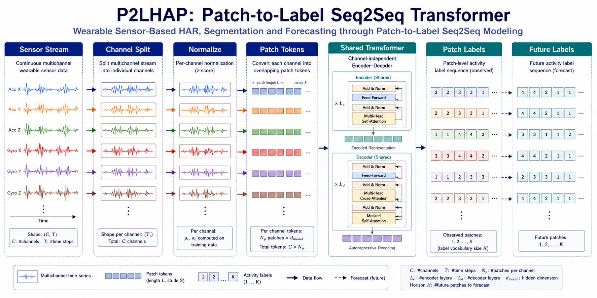
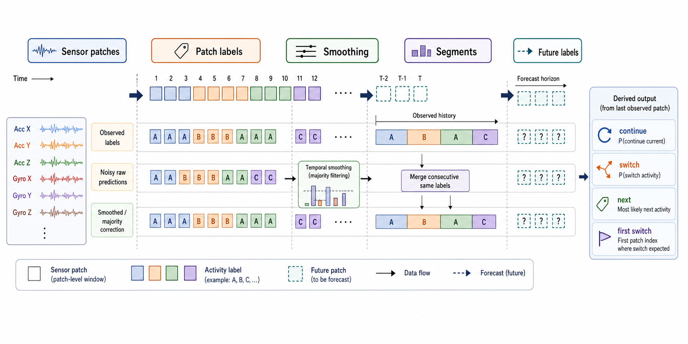
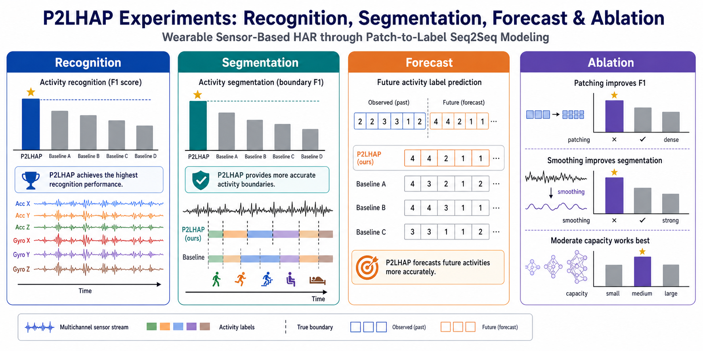

1. 问题动机：三个任务统一
传统方法常把 HAS、HAR、HAF 分开建模，或用共享编码器加多个任务头。P2LHAP 改为用一个 Seq2Seq 标签序列输出统一三者。
Activity Segmentation：从连续流中确定每段活动的起止边界。
Activity Recognition：给每个 patch 或活动段赋予活动类别。
Activity Forecast：预测未来若干 patch 的活动标签序列。
2. 数据与输入形状
X_{1:L}M 维连续 wearable sensor sequence；每个时刻 x_t 属于 R^{1 x M}。y_{1:L}每个采样点对应活动标签；最终转成 patch-level labels。P, Spatch length 与 stride；默认 P=10, S=10，可 overlap 或 non-overlap。B x M x Lbatch 中的多通道序列；按通道独立切分 patch。(B*M) x P x Nreshape 后送入 Transformer；N = floor((L-P)/S)+2。注意：论文不是完全取消长度超参数，而是不再假设一个固定滑窗就是一个完整活动。
3. 数据集与默认设置
WISDM
29 人，裤袋手机三轴加速度计，20 Hz，6 类日常活动；论文用线性插值填补缺失值。
PAMAP2
9 人，胸/手/踝 IMU，100 Hz；加速度、角速度、磁力计；12 个必做活动 + 6 个可选活动。
UNIMIB SHAR
30 人，Samsung 手机 Bosch BMA220，50 Hz；11,771 段，17 类活动：9 类 ADL + 8 类跌倒。
4. 方法数据流：Patch-to-Label Seq2Seq

该图用于把论文的 channel split、normalization、patch token、shared Transformer、current/future labels 串成一条可讲述的数据管线。
A. Patching
- 每个 sensor channel 独立处理。
- 先归一化，再切成长度 P 的 patch。
- patch 作为 Transformer token，而不是单点或完整活动窗口。
- 短事件可由多个 patch 捕获，长活动可包含任意数量 patch。
B. Channel Independence
- 每个 patch 只含单一传感器通道信息。
- 不同通道共享 embedding 与 Transformer 权重。
- 目标是减少多变量互相干扰并控制参数规模。
- 类似 PatchTST 在时间序列预测中的设计思想。
C. Encoder
- linear projection: patch block -> D 维 latent space。
- learnable positional encoding 保留 patch 时序位置。
- multi-head attention + BatchNorm + FFN + residual。
- 输出每个通道的 patch-level latent representation。
D. Decoder + Head
- decoder 结合 encoder representation 与 patch-level sensor data。
- 用 K/Q/V attention 生成 z' 表示。
- Flatten + Linear + Softmax 输出 patch activity labels。
- 同时输出未来长度 T_pre 的 label sequence。
5. 训练目标与平滑策略
Patch Classification Loss
对每个 patch 的预测标签与真实标签做 Softmax CrossEntropy，并考虑类别不均衡下的有效样本权重。
Forecast Loss
根据未来 patch activity label sequence 与 ground truth future labels 计算预测损失。
Smoothing Loss
使用 truncated MSE 约束相邻 patch 的类别概率变化，减少过度分割。
总目标
训练时联合优化当前分类、分割平滑和未来标签预测。
6. 推理阶段：从标签序列派生三任务

Recognition
每个 patch 的标签就是局部活动识别结果；活动段标签可由相邻 patch 合并后得到。
Segmentation
对 y_hat 使用 smoothing window 做 majority correction，再合并相邻同类 patch 得到边界 B={(s_i,e_i)}。
Forecast
输出未来 8 个 patch 的类别序列，可直接判断接下来活动是否延续或切换。
对方向一的迁移
可扩展为 human label sequence + phone motion label sequence，或组合状态序列。
7. 实验结果：Recognition / Segmentation / Forecast

Recognition: Acc / F1
| Dataset | Acc | F1 |
|---|---|---|
| PAMAP2 | 98.71% | 98.92% |
| WISDM | 97.51% | 97.52% |
| UNIMIB | 81.51% | 82.04% |
论文表 II：P2LHAP 在作者设置下整体优于选定对比方法；UNIMIB F1 比 leading method 高 3.26%。
Segmentation: Jaccard Index
| Method | JI |
|---|---|
| Attn | 0.7908 |
| A&D | 0.8312 |
| JSR | 0.8947 |
| Ours w/o smoothing | 0.8445 |
| Ours | 0.9294 |
论文表 III：PAMAP2 上 smoothing 对分割边界非常关键。
Forecast: PAMAP2
| Signal Forecaster | MSE |
|---|---|
| SynSigGAN | 0.355 |
| Conv2LSTM | 0.302 |
| Seq2Seq-LSTM | 0.240 |
| TTS-GAN | 0.163 |
| Ours | 0.126 |
未来 8 个 patch 的活动类别预测平均准确率约 96.59%；表 IV 还比较未来传感器信号预测 MSE。
Complexity: PAMAP2
| Method | Param | Time |
|---|---|---|
| Attn | 1.983M | 8.22 |
| A&D | 1.503M | 11.88 |
| JSR | 2.799M | 0.78 |
| Ours | 1.449M | 0.08 |
表 VIII：作者报告更低参数量和推理时间，说明框架有移动/嵌入式潜力。
8. 消融实验：为什么 patch 和结构有效
Patch Size 对 F1 的影响
| Dataset | P=1 | P=2 | P=5 | P=10 | P=20 |
|---|---|---|---|---|---|
| WISDM | 0.8544 | 0.9056 | 0.8819 | 0.9751 | 0.9568 |
| PAMAP2 | 0.9151 | 0.9406 | 0.9610 | 0.9892 | 0.9667 |
| UNIMIB | 0.6719 | 0.6950 | 0.7566 | 0.8204 | 0.7876 |
No Patching vs P2LHAP
| Model | WISDM | PAMAP2 | UNIMIB |
|---|---|---|---|
| Transformer only | 0.9090 | 0.8783 | 0.7533 |
| P2LHAP | 0.9752 | 0.9892 | 0.8204 |
Depth / Heads
论文在 PAMAP2 上调节 encoder-decoder 层数和 attention heads。最佳默认配置为 6 层、8 heads；继续加到 16 heads 或 8 层不一定更好。
结论：patch 组织、合适模型容量和 smoothing 都是性能来源，不只是“换成 Transformer”。
9. 局限与对本课题的使用方式
论文局限
- closed-set softmax，不能拒识未知活动。
- 数据划分为连续流 0.7/0.1/0.2，不是跨受试者验证。
- 数据集不是 UCI HAR，也不是手机运镜双标签场景。
- 仍需设置 patch size、stride、forecast horizon。
- channel-independent 减少干扰，但可能弱化真实跨通道耦合。
对方向一的启发
- 把“延续/切换”建模为未来 patch 标签序列预测。
- 从未来序列派生 continue_prob 与 switch_prob。
- 将单标签扩展为双标签：人体动作 + 手机/相机运动。
- 或把二者组合成 joint state sequence。
- 先评估 segmentation/forecast，再讨论语义对齐或多模态。
最重要的迁移点不是直接照搬模型，而是采用 patch-level future label sequence 作为“未来延续概率”和“切换趋势预测”的基础输出。